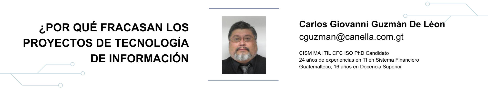

17 ¿Por qué fracasan los proyectos de Tecnología de Información

17.2 Artículo
Con la falta de una guía apropiada para la Dirección de Proyectos, en los últimos años se han puesto de moda muchas metodologías y dentro de ellas se encuentra el PMBok Guide (Guía de mejores prácticas para la Dirección de proyectos), en donde proyecto exitoso se define como el que se implementa bajo tres pilares fundamentales, alcance, tiempo y costo, incluyendo calidad y riesgos como elementos necesarios dentro de estos pilares.
Relacionando situaciones actuales con los cursos de doctorado y los ya lejanos métodos científicos, me doy cuenta que todas o la mayoría de las metodologías nacen en función a la observación y experimentación, en donde debemos seguir pasos como:
- Analizar el problema (observación)
- Crear el proyecto para la solución del problema (Inducción)
- Satisfacer la necesidad mediante el proyecto para la solución del problema (Experimentación)
- Verificación de resultados u obtención de los beneficios.
Estas reflexiones me llevaron a investigar más sobre metodologías de Administración de Proyectos, y proyectos informáticos, la búsqueda de metodologías de Gestión de Riesgos y otras, hasta que hace un algunos años pude visualizar una metodología especifica para proyectos de Tecnología de Información (TI) la cual se caracteriza por darle valor a la Inversión Tecnológica y el Retorno de la misma, agrupando y priorizando proyectos en portafolios y programas con la finalidad de hacer más fácil la aceptación y el rechazo de cada uno de ellos, así mismo ya se acentúa en esta metodología el manejo y la administración de los riesgos informáticos que son características técnicas especiales de cada uno de los proyectos, las cuales han sido adaptadas de estándares como el Neozelandés 4360, COSO (Comitte of Sponsoring Organization), o el ya muy famoso ERM (Enterprise Risk Management).
Al transcurrir de los años se ha acentuado la dependencia hacia los sistemas informáticos en todas las organizaciones a nivel mundial, e incluso depende del manejo de estos sistemas informáticos y la seguridad que le puedan brindar a los registros financieros, el valor que tengan en bolsa mediante la Ley denominada Sarbanes Oxley (Sox), por lo que muchas organizaciones invierten grandes cantidades de recursos financieros con la finalidad de obtener beneficios tales como seguridad, integridad, confidencialidad, confiabilidad y disponibilidad, disminuyendo o eliminando el recurso humano en los procesos productivos, ya que una de las bases en las cuales descansa el control interno es que debe existir una minima manipulación de los datos por intervención humana, asi mismo se asentuan los pilares fundamentales de la seguridad informática en tres de las primeras palabras citadas anteriormente.
MATERIAL Y MÉTODOS
Dentro de una organización, un proyecto es parte de su planeación estratégica, ya que con él se implementan algunas actividades que son planificadas, pero necesita un tiempo y un fin establecido. La anterior anécdota ha servido de preámbulo para contestar la siguiente pregunta: ¿Por qué fallan los proyectos IT con tanta frecuencia? De acuerdo al reporte. El impacto de requerimientos de negocio en el éxito de proyectos de tecnología, realizado por IAG Consulting el 68% de los proyectos son marginalmente exitosos o completos fracasos. De hecho, 50% de los proyectos “marginalmente exitosos” fueron “fugitivos” que poseían dos de las siguientes tres características:
- Tomar más de 180% del tiempo para ser terminados.
- Consumir un exceso del 160% sobre el presupuesto estimado.
- La entrega de menos del 70% de la funcionalidad requerida.
DISCUSIÓN
Hoy día la tecnología, continúa convirtiéndose en un componente fundamental en todas las organizaciones a nivel mundial, debido a que los proyectos tecnológicos son cada vez más importantes, complicados y de mayor riesgo para la organización, y tomando en consideración los datos presentados por la empresa IAG, esto significa que dos de cada tres proyectos se cancelan o son tan malos que nadie no los usa y que la mitad de los que hacen “el paso de la muerte” acabaron batiéndose de alguna u otra forma. ¿Cuáles son las razones de este comportamiento? La mayoría de Informáticos, ya los conoce, pero con el afán de ilustrar se citan a continuación:
- Requerimientos incompletos
- Fallas en la comunicación
- Falta de recursos
- Metas poco realistas
- Requerimientos cambiantes
- Falta de planeación
- Malas prácticas de desarrollo
- Seguimiento deficiente
- Uso de tecnologías inmaduras
- Presiones comerciales
La mayoría de estos riesgos son mitigados con metodologías de arquitectura, calidad, gestión de proyectos y desarrollo para asegurar el éxito. Tomando en consideración este tipo de necesidades, la Institución ISACA (Information System Audit & Control Association), conjuntamente con el ITGI (Instituto de Gobierno de Tecnología de Información), se dio a la tarea de investigar las necesidades y crear una metodología específicamente para proyectos informáticos, la cual denomino VAL IT, (Valor de Tecnología de Información), así como también se creó el PMBok (guía de mejores prácticas para proyectos). Sin embargo, ¿Por qué sigue existiendo un altísimo índice de fracaso en la industria? Incluso adoptando todas estas medida tenemos una alta probabilidad de que el proyecto falle en sus objetivos. La respuesta es relativamente sencilla, y la misma está en la gente, debido a que:
- El proyecto está basado en los sueños del CEO, pero nadie tiene claro su valor de negocio.
- El patrocinador está demasiado ocupado para escuchar, o es demasiado débil para ofrecer su apoyo.
- La Alta Gerencia quiere empezar a trabajar ya y preocuparse por la planeación después.
- Los estimados de la duración del proyecto son realizados por Alta Gerencia.
- Alta Gerencia indica al Administrador del proyecto que ignore términos contractuales vagos.
- AltaGerencia advierte al Administrador del Proyecto que no levante la mano acerca de problemas durante la fase de planeación.
- Los Gerencia o mandos funcionales proporcionan los recursos incorrectos.
- El cliente acepta trabajo de manera formal, pero se niega a ponerlo sobre escrito.
- Las expectativas del cliente son demasiado elevadas
- El Administrador del proyecto está demasiado preocupado en perder el empleo o enfadar al cliente.
17.3 Conclusiones
- Las decisiones relacionadas requieren un mayor nivel Jerárquico en la organización y mayor calidad para su adecuado sustento.
- Deben evaluarse desde una perspectiva de Valor para la organización
- Deben determinarse los factores de éxito, ya que según el PMI (Project Management Institute) son alcance, costo y tiempo.
- Se debe considerar el costo de oportunidad de cada una de las inversiones, hay que recordar que el riesgo de estos proyectos no solo radica en el costo de la tecnología en si.
- Hay que considerar que el factor humano es un riesgo prioritario dentro de los proyectos.
17.4 Recomendaciones
Hoy en día en nuestro país (Guatemala), no existe información sobre la cantidad de proyectos de Tecnología que fallan, probablemente por temor a que pueda afectar la imagen de la empresa que los desarrolla, principalmente en las instituciones financieras, por lo que se sugiere realizar estudios a este tipo de situaciones para corregir los inconvenientes que presenta cada proyectos en las distintas organizaciones para adoptar metodologías como las que se han citado anteriormente y/o crear una base de conocimientos para aprender lecciones de otras personas que han estado a cargo de los proyectos.